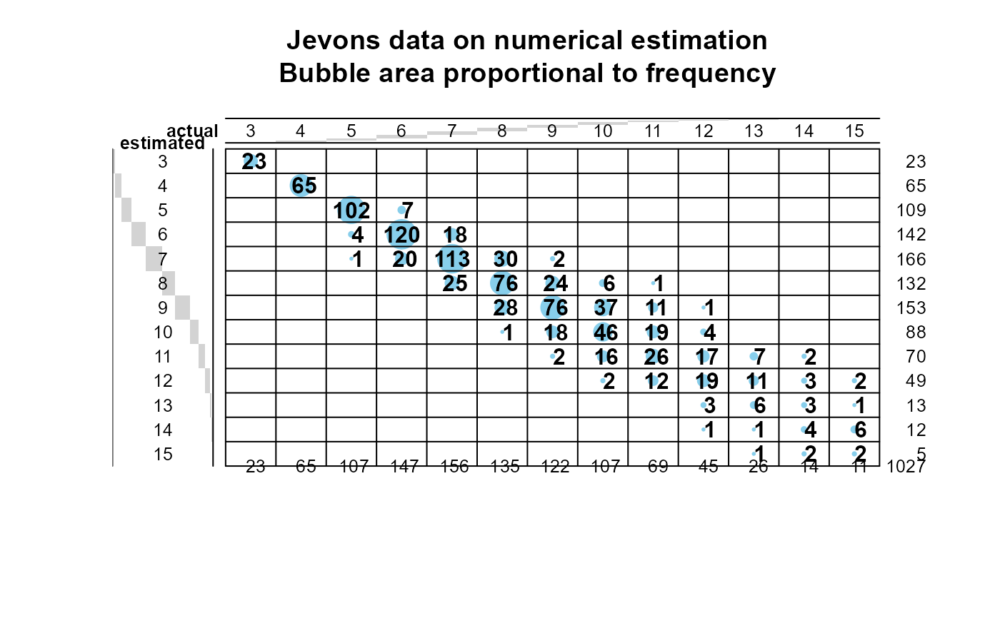
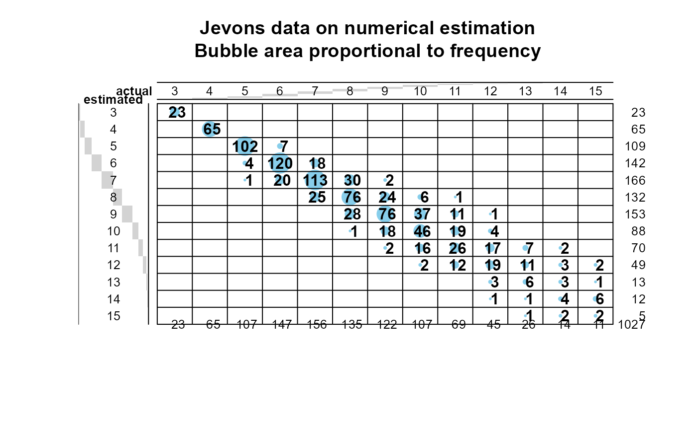

W. Stanley Jevons' data on numerical discrimination
Jevons.RdIn a remarkable brief note in Nature, 1871, W. Stanley Jevons described the results of an experiment he had conducted on himself to determine the limits of the number of objects an observer could comprehend immediately without counting them. This was an important philosophical question: How many objects can the mind embrace at once?
He carried out 1027 trials in which he tossed an "uncertain number" of uniform black beans into a box and immediately attempted to estimate the number "without the least hesitation". His questions, procedure and analysis anticipated by 75 years one of the most influential papers in modern cognitive psychology by George Miller (1956), "The magical number 7 plus or minus 2: Some limits on ..." For Jevons, the magical number was 4.5, representing an empirical law of complete accuracy.
Usage
data(Jevons)Format
A frequency data frame with 50 observations on the following 4 variables.
actualActual number: a numeric vector
estimatedEstimated number: a numeric vector
frequencyFrequency of this combination of (actual, estimated): a numeric vector
erroractual-estimated: a numeric vector
Details
The original data were presented in a two-way, 13 x 13 frequency table,
estimated (3:15) x actual (3:15).
References
Miller, G. A. (1956). The Magical Number Seven, Plus or Minus Two: Some Limits on Our Capacity for Processing Information, Psychological Review, 63, 81-97, http://www.musanim.com/miller1956/
Examples
data(Jevons)
# show as tables
xtabs(frequency ~ estimated+actual, data=Jevons)
#> actual
#> estimated 3 4 5 6 7 8 9 10 11 12 13 14 15
#> 3 23 0 0 0 0 0 0 0 0 0 0 0 0
#> 4 0 65 0 0 0 0 0 0 0 0 0 0 0
#> 5 0 0 102 7 0 0 0 0 0 0 0 0 0
#> 6 0 0 4 120 18 0 0 0 0 0 0 0 0
#> 7 0 0 1 20 113 30 2 0 0 0 0 0 0
#> 8 0 0 0 0 25 76 24 6 1 0 0 0 0
#> 9 0 0 0 0 0 28 76 37 11 1 0 0 0
#> 10 0 0 0 0 0 1 18 46 19 4 0 0 0
#> 11 0 0 0 0 0 0 2 16 26 17 7 2 0
#> 12 0 0 0 0 0 0 0 2 12 19 11 3 2
#> 13 0 0 0 0 0 0 0 0 0 3 6 3 1
#> 14 0 0 0 0 0 0 0 0 0 1 1 4 6
#> 15 0 0 0 0 0 0 0 0 0 0 1 2 2
xtabs(frequency ~ error+actual, data=Jevons)
#> actual
#> error 3 4 5 6 7 8 9 10 11 12 13 14 15
#> -2 0 0 1 0 0 1 2 2 0 1 1 0 0
#> -1 0 0 4 20 25 28 18 16 12 3 1 2 0
#> 0 23 65 102 120 113 76 76 46 26 19 6 4 2
#> 1 0 0 0 7 18 30 24 37 19 17 11 3 6
#> 2 0 0 0 0 0 0 2 6 11 4 7 3 1
#> 3 0 0 0 0 0 0 0 0 1 1 0 2 2
# show as sunflowerplot with regression line
with(Jevons, sunflowerplot(actual, estimated, frequency,
main="Jevons data on numerical estimation"))
Jmod <-lm(estimated ~ actual, data=Jevons, weights=frequency)
abline(Jmod)
 # show as balloonplots
if (require(gplots)) {
with(Jevons, balloonplot(actual, estimated, frequency, xlab="actual", ylab="estimated",
main="Jevons data on numerical estimation\nBubble area proportional to frequency",
text.size=0.8))
with(Jevons, balloonplot(actual, error, frequency, xlab="actual", ylab="error",
main="Jevons data on numerical estimation: Errors\nBubble area proportional to frequency",
text.size=0.8))
}
#> Loading required package: gplots
#>
#> Attaching package: 'gplots'
#> The following object is masked from 'package:stats':
#>
#> lowess

# show as balloonplots
if (require(gplots)) {
with(Jevons, balloonplot(actual, estimated, frequency, xlab="actual", ylab="estimated",
main="Jevons data on numerical estimation\nBubble area proportional to frequency",
text.size=0.8))
with(Jevons, balloonplot(actual, error, frequency, xlab="actual", ylab="error",
main="Jevons data on numerical estimation: Errors\nBubble area proportional to frequency",
text.size=0.8))
}
#> Loading required package: gplots
#>
#> Attaching package: 'gplots'
#> The following object is masked from 'package:stats':
#>
#> lowess

 # plot average error
if(require(reshape)) {
unJevons <- untable(Jevons, Jevons$frequency)
str(unJevons)
require(plyr)
mean_error <- function(df) mean(df$error, na.rm=TRUE)
Jmean <- ddply(unJevons, .(actual), mean_error)
with(Jmean, plot(actual, V1, ylab='Mean error', xlab='Actual number', type='b', main='Jevons data'))
abline(h=0)
}
#> Loading required package: reshape
#>
#> Attaching package: 'reshape'
#> The following object is masked from 'package:dplyr':
#>
#> rename
#> 'data.frame': 1027 obs. of 4 variables:
#> $ actual : num 3 3 3 3 3 3 3 3 3 3 ...
#> $ estimated: num 3 3 3 3 3 3 3 3 3 3 ...
#> $ frequency: num 23 23 23 23 23 23 23 23 23 23 ...
#> $ error : num 0 0 0 0 0 0 0 0 0 0 ...
#> Loading required package: plyr
#> ------------------------------------------------------------------------------
#> You have loaded plyr after dplyr - this is likely to cause problems.
#> If you need functions from both plyr and dplyr, please load plyr first, then dplyr:
#> library(plyr); library(dplyr)
#> ------------------------------------------------------------------------------
#>
#> Attaching package: 'plyr'
#> The following objects are masked from 'package:reshape':
#>
#> rename, round_any
#> The following objects are masked from 'package:dplyr':
#>
#> arrange, count, desc, failwith, id, mutate, rename, summarise,
#> summarize
# plot average error
if(require(reshape)) {
unJevons <- untable(Jevons, Jevons$frequency)
str(unJevons)
require(plyr)
mean_error <- function(df) mean(df$error, na.rm=TRUE)
Jmean <- ddply(unJevons, .(actual), mean_error)
with(Jmean, plot(actual, V1, ylab='Mean error', xlab='Actual number', type='b', main='Jevons data'))
abline(h=0)
}
#> Loading required package: reshape
#>
#> Attaching package: 'reshape'
#> The following object is masked from 'package:dplyr':
#>
#> rename
#> 'data.frame': 1027 obs. of 4 variables:
#> $ actual : num 3 3 3 3 3 3 3 3 3 3 ...
#> $ estimated: num 3 3 3 3 3 3 3 3 3 3 ...
#> $ frequency: num 23 23 23 23 23 23 23 23 23 23 ...
#> $ error : num 0 0 0 0 0 0 0 0 0 0 ...
#> Loading required package: plyr
#> ------------------------------------------------------------------------------
#> You have loaded plyr after dplyr - this is likely to cause problems.
#> If you need functions from both plyr and dplyr, please load plyr first, then dplyr:
#> library(plyr); library(dplyr)
#> ------------------------------------------------------------------------------
#>
#> Attaching package: 'plyr'
#> The following objects are masked from 'package:reshape':
#>
#> rename, round_any
#> The following objects are masked from 'package:dplyr':
#>
#> arrange, count, desc, failwith, id, mutate, rename, summarise,
#> summarize